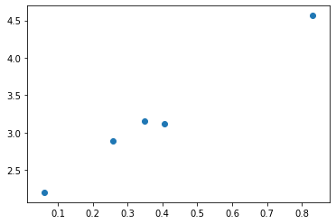

import torch
import numpy as npLet’s go hands-on
tensor1 = torch.tensor([1,2,3.], dtype=torch.float32)
tensor2 = torch.tensor([5,6,7.], dtype=torch.float64)
display(tensor1, tensor2)tensor([1., 2., 3.])tensor([5., 6., 7.], dtype=torch.float64)display(type(tensor1), type(tensor2))torch.Tensortorch.Tensordisplay(tensor1.dtype, tensor2.dtype)torch.float32torch.float64long_tensor = tensor1.to(torch.int32) # device, dtype, tensor
display(long_tensor)tensor([1, 2, 3], dtype=torch.int32)long_tensor.devicedevice(type='cpu')device = 'cuda' if torch.cuda.is_available() else 'cpu'
long_tensor_gpu = long_tensor.to(device)
long_tensor_gputensor([1, 2, 3], device='cuda:0', dtype=torch.int32)long_tensor_born_on_gpu = torch.zeros(2,10, device=device).to(torch.float64)
long_tensor_born_on_gputensor([[0., 0., 0., 0., 0., 0., 0., 0., 0., 0.],
[0., 0., 0., 0., 0., 0., 0., 0., 0., 0.]], device='cuda:0',
dtype=torch.float64)inspired_tensor = torch.tensor([1.,2.]).to(long_tensor_born_on_gpu)
inspired_tensortensor([1., 2.], device='cuda:0', dtype=torch.float64)np_array = np.array([1,2,3.])
np_array.log()AttributeError: 'numpy.ndarray' object has no attribute 'log'pt_array = torch.tensor([1,2,3.])
pt_array.log() # sin(), cos(), tan(), exp()tensor([0.0000, 0.6931, 1.0986])Gradient is all you need
import matplotlib.pyplot as pltx = torch.rand(5,1)
y = 3 * x + 2 + torch.randn_like(x)*0.1
plt.scatter(x, y);
x_plus_ones = torch.cat([torch.ones_like(x), x], dim=1)
x_plus_ones.shapetorch.Size([5, 2])theta = torch.zeros(2,1, requires_grad=True)
thetatensor([[0.],
[0.]], requires_grad=True)theta.gradtheta.grad_fnlr = 0.1
y_pred = x_plus_ones@theta
loss = ((y_pred - y)**2).mean()
loss.backward()
# y_pred = torch.matmul(x_plus_ones, theta)
# y_pred = torch.mm(x_plus_ones, theta)theta.grad # dloss/dthetatensor([[-6.3681],
[-2.8128]])theta.grad_fntheta.data -= lr * theta.grad.datathetatensor([[0.6368],
[0.2813]], requires_grad=True)theta.grad_fnwith torch.no_grad():
plt.scatter(x, y)
plt.plot(x, x_plus_ones@theta)
for i in range(10):
theta.grad.data.zero_()
y_pred = x_plus_ones@theta
loss = ((y_pred - y)**2).mean()
loss.backward()
theta.data -= lr * theta.gradwith torch.no_grad():
plt.scatter(x, y)
plt.plot(x, x_plus_ones@theta)Advanced
class LinearRegression(torch.nn.Module):
def __init__(self):
super().__init__()
self.theta = torch.nn.Parameter(torch.zeros(2,1))
# self.register_parameter(theta, torch.zeros(2,1))
def forward(self, x): # Don't call directly. it is called by __call__ method
x_plus_ones = torch.cat([torch.ones_like(x), x], dim=1)
y_pred = x_plus_ones@self.theta
return y_predmodel = LinearRegression()
modelLinearRegression()for name, value in model.named_parameters():
print(name, value)theta Parameter containing:
tensor([[0.],
[0.]], requires_grad=True)optimizer = torch.optim.Adam(model.parameters(), lr=0.1)
loss_fn = torch.nn.MSELoss() # torch.nn.CrossEntropyLoss()
for i in range(10):
optimizer.zero_grad()
y_pred = model(x)
loss = loss_fn(y_pred, y)
loss.backward()
optimizer.step()model.state_dict()OrderedDict([('theta',
tensor([[0.9799],
[0.9808]]))])Wanna run on GPU?
x_gpu = x.to(device)
y_gpu = y.to(device)print(model.theta)
model.to(device)
print(model.theta)Parameter containing:
tensor([[0.9799],
[0.9808]], requires_grad=True)
Parameter containing:
tensor([[0.9799],
[0.9808]], device='cuda:0', requires_grad=True)optimizer = torch.optim.Adam(model.parameters(), lr=0.1)
loss_fn = torch.nn.MSELoss() # torch.nn.CrossEntropyLoss()
for i in range(10):
optimizer.zero_grad()
y_pred = model(x_gpu)
loss = loss_fn(y_pred, y_gpu)
loss.backward()
optimizer.step()State dictionary
# torch.save(model.state_dict(), path)
# model.load_state_dict(torch.load(path))NN way
class LinearRegression(torch.nn.Module):
def __init__(self):
super().__init__()
self.layer = torch.nn.Linear(2, 1) # torch.nn.Linear(128, 64)
# What else?
# self.activation = torch.nn.ReLU()
# torch.nn.LSTM()
# torch.nn.Conv2d()
def forward(self, x): # Don't call directly. it is called by __call__ method
x_plus_ones = torch.cat([torch.ones_like(x), x], dim=1)
y_pred = self.layer(x_plus_ones)
return y_pred